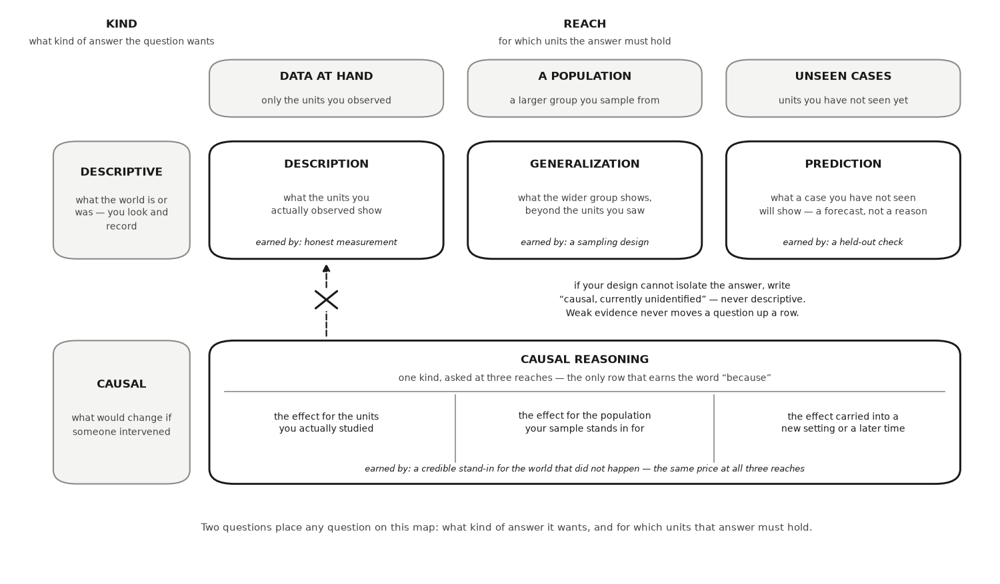
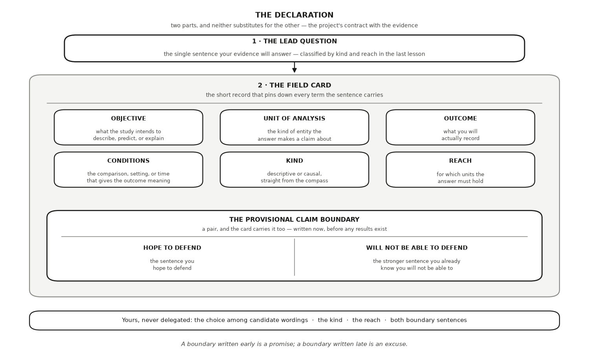

HONR 46400 · Evidence-Driven Research
Studio 2 — Set your rules, shape your question
What you can defend when you leave
Studio 2
Set how you and your tools will work while the stakes are still small, verify your first AI assistance, and close by declaring the question your evidence will answer.
The milestone ahead
Studio 2
This studio closes with Milestone 2: Your rules and your question, a short chapter of its own after the lessons. What it asks you to produce. Your working agreement (an ownership statement, your working rules, your opened AI Research Ledger, your delegation map, and the red-flag screen of your chosen problem) and your question, formally declared: objective, units, outcomes and conditions, kind and reach, and a provisional claim boundary.
The lessons in this studio
Studio 2 · Road map
- Lesson 2 — AI Is Your Arm, Not Your Brain: your opened AI Research Ledger and one verified factual hinge from your own problem, including the retrospective Studio 1 receipt as row one.
- Lesson 3 — You as a Research Director: your delegation map for the whole project and for the declaration ahead: candidate wording may travel, while the lead question, kind, reach, and boundary stay yours.
- Lesson 4 — Specify, Delegate, Interrogate, Inspect, Verify, Document, Defend: one complete SDIIVDD run on a checkable claim your starting belief makes, with the check’s outcome on record — including “nothing changed” when the check agreed.
- Lesson 5 — Research Responsibility and Intellectual Ownership: your ownership statement, never-delegate list, and first AI-use disclosure, with the research question named as the first sentence your name signs.
- Lesson 6 — Choose Your Question’s Kind and Reach: your lead question chosen from the candidates, placed by kind and reach, with double-barrels split and a comparison world recorded when causal.
- Lesson 7 — Declare Your Research Question: your chosen formal wording with every change accounted for, the field card, the boundary pair with its uncertainty-and-limitations line, and the stranger-test result, dated as version zero.
AI Is Your Arm, Not Your Brain
Lesson 1 of this studio · Chapter 2
what has to happen to an AI’s output before you are willing to call it evidence
The research decision
Chapter 2
Decide what must happen between an AI output and evidence you are willing to use. Name the check, record the exchange, and keep responsibility for the result.
The words this chapter uses
Chapter 2 · Key terms
Delegation
handing a well-specified task to the tool, such as “find three published sources for last year’s county unemployment rate.
Verification
an independent check, run by a method outside the model, that the result is actually true.
A CPA’s signature says: I checked this, and I will answer for it
Chapter 2 · Why this decision matters
- A certified public accountant (CPA) is licensed to sign off on a company’s financial statements.
- That signature makes them personally answerable for the numbers.
- Investors turn to the CPA if the figures prove wrong.
- Signing is not a claim that the accounting software ran without errors.
A tool cannot sign your work. You can.
Chapter 2 · Why this decision matters
- An AI tool can fetch a statistic, draft a paragraph, or write working code in seconds.
- A brainstorm can produce a possibility. It cannot make a factual statement reliable.
- So the question is not what the tool can produce.
- It is what you handed it, and how you checked what came back.
The arm reaches. It does not decide what is true.
Chapter 2 · The concept
- The rule that names the chapter: AI as your arm, not your brain.
- The tool can reach, fetch, draft, and compute for you.
- It does not get to decide what is true or what you claim.
- Let it draft a summary of a government statistics release, then confirm every number yourself.
Verification runs by a method outside the model
Chapter 2 · The concept
- Delegate a well-specified task: find three published sources for last year’s county unemployment rate.
- Verify by opening the statistical agency’s real data table and reading the number yourself.
- Trusting what the tool typed is not a check.
A wrong answer looks exactly like a right one
Chapter 2 · The concept
Hallucination
confident, polished output that is simply made up, such as a citation to a report that does not exist
Retrievable
a source is retrievable when you can open the actual document and confirm it
Four calls stay yours, however good the tool gets
Chapter 2 · The concept
A never-delegate decision is a call that stays yours no matter how good the tool becomes.
- Which question you pursue.
- What your evidence licenses.
- The ethics of the work.
- How you state your uncertainty.
Ask, then Verify, then Document
Chapter 2 · The concept
- Use the tool ambitiously.
- Confirm every fact and number yourself.
- Log the tool, the task, and the check in a record that travels with your work (Autio et al. 2024).
The ledger opens now, and backfills what came before
Chapter 2 · The concept
- The curiosity studio opened with the discovery cycle Zahavy presents through Einstein (Zahavy 2026).
- There you worked upstream, where a possible explanation begins.
- This lesson starts downstream, once an idea exists.
- Every line from that studio becomes a row of its own, marked retrospective.
- The date a ledger opens does not erase an earlier delegation.
A 2019 menu price and a 2025 price are not comparable as they stand
Chapter 2 · A worked example
- The question: did meals near you get more expensive after a 2019 local minimum-wage increase?
- A dollar buys less now than it did then.
- The Consumer Price Index (CPI) is a published number tracking what a typical household’s basket costs over time.
- A higher value means the same basket costs more.
Sort the work before you ask
Chapter 2 · A worked example
- Delegate: locating candidate published price series.
- Delegate: listing the inputs an inflation adjustment needs.
- Keep: that a consumer index, not a producer or wholesale index, fits what households pay.
- Keep: the base year you convert every price into.
- Keep: whether a source is authoritative.
Recompute it yourself, or it was never evidence
Chapter 2 · A worked example
- Open the agency’s actual data table and read the two index values yourself.
- Recompute the percentage change by hand.
- If it confirms the number, you log a verified input.
- If it differs, or cannot be found at all, the number was never evidence.
The code takes the index on faith, exactly as the tool did
Chapter 2 · A worked example
- Watch the two index values: they are placeholders standing in until you retrieve the real ones.
- Replace them and rerun; nothing in the code can check them for you.
- The thirty 2019 menu prices are simulated, seeded at 464.
import numpy as np, pandas as pd
SEED = 464
rng = np.random.default_rng(SEED)
# Thirty 2019 menu prices from restaurants near campus.
prices_2019 = np.round(rng.normal(12.50, 2.10, size=30), 2)
# These two index values are the input you must RETRIEVE yourself, from the
# agency's own table. They stand in until you do; replace them and rerun.
cpi_2019, cpi_2025 = 100.0, 123.0
adjusted = prices_2019 * cpi_2025 / cpi_2019
print(f"index 2019 {cpi_2019} -> index 2025 {cpi_2025}")
print(f"price change implied : {(cpi_2025 / cpi_2019 - 1) * 100:.0f}%")
print(f"mean 2019 menu price : ${prices_2019.mean():.2f}")
print(f"same meal in 2025 dollars : ${adjusted.mean():.2f}")An AI failure case
Chapter 2
Where the tool failed
You ask for the median starting salary of graduates in your field and a source. The tool returns a crisp value and attributes it to “the 2024 National Graduate Earnings Survey, Table 3.” It reads like every real citation you have seen: an official-sounding survey, a year, a table. It is fabricated, or the number is not on that page.
How it failed
Chapter 2 · An AI failure case
- Here is exactly how you catch it.
- You do not trust the citation as delivered.
- You search for the survey in a library catalog and, if it opens, turn to the named table and read the line.
- If the survey does not exist, or has no such value, the confident citation collapses.
- Fabricated sources sound just as authoritative as real ones, so the only reliable filter is opening the document.
Do not delegate
Chapter 2
This stays yours
These stay yours, no matter how fluent the tool sounds. Deciding which measure fits your question and which base year the comparison requires. Judging whether a source is authoritative enough to build on. Setting the claim you will defend and stating its uncertainty. The tool gathers options and drafts prose; choosing among them, and answering for the choice, is the researcher’s job.
It is your turn
Chapter 2 · Your move
- Open a blank spreadsheet or document and title it AI Research Ledger.
- Open your ledger’s first rows backward, one for each Studio 1 activity you logged: the brainstorm, the source search, the candidate list, and the red-team.
- Under your chosen problem, write the single fact you would need to know before you could take it further.
- Take the fact you just named, and ask an AI tool for three published sources that speak to it.
- Log the exchange in your AI Research Ledger, and verify at least one output with a named method from the Verification Guide.
Work it in the companion notebook with Chapter 2 open beside it. Log every delegation in your AI Research Ledger.
You as a Research Director
Lesson 2 of this studio · Chapter 3
which tasks in your project you hand to an AI, which you hand over and then check yourself, and which never leave your hands at all
The research decision
Chapter 3
Every task in your project belongs in one of three buckets: safe to delegate, delegate then verify, or never delegate. Your decision here is where each task goes. You sort the list before you open the tool, not in the middle of using it, and you defend the placements one line at a time.
The words this chapter uses
Chapter 3 · Key terms
Delegation
handing a task to someone or something else to carry out, the way you might hand off formatting a messy table while keeping the reading of what the numbers mean.
Verification
the step that earns trust: confirming a result yourself, by a named method, before you put your name on it.
A lab head briefs a new hire on where the line sits
Chapter 3 · Why this decision matters
- A principal investigator runs a lab and owns its scientific decisions.
- Day one, a new lab member is told where the line sits.
- The assistant is faster. The line does not move because of that.
Here is the deal. A research assistant here can run the assay, plot the readings, and format the table, and honestly, they will do it faster than I would. What the assistant does not do is choose the question, decide what the readings mean, or sign the claim. That part is mine. Learn where that line sits, because it does not move just because the assistant got faster.
The risk is drift, not the routine work
Chapter 3 · Why this decision matters
- AI is the fastest research assistant you will ever direct.
- The risk is not that it does the routine work.
- The risk is letting it drift into the calls that make the work yours.
- Deciding task by task what you delegate makes you a director, not a passenger.
A director assigns the work and still answers for it
Chapter 3 · The concept
Research director
the person who assigns each piece of work and stays accountable for the finished result
Delegation triage
sorting each task into one of three buckets before you start
Never-delegate decision
any call that defines the science itself, from the question to the uncertainty you report
Two buckets you may hand out, and they are not the same bucket
Chapter 3 · The concept
- Safe to delegate: low stakes and easy to check, so a wrong answer costs little.
- Example: rewording one survey item three ways.
- Delegate then verify: fine to hand out, but you must confirm it with a real check.
- Example: ask for a lab protocol, then open it and confirm it says what the tool claimed.
Never delegate names the science itself
Chapter 3 · The concept
- The question you pursue, and the design and the people or samples it covers.
- What your measures mean, and the ethics.
- The boundary of your claim, and the uncertainty you report.
- Example: deciding whether your evidence actually supports the claim you want to make.
- Research-integrity guidance draws this same line (National Academies of Sciences, Engineering, and Medicine 2017).
A loop you did not watch is not a loop you verified
Chapter 3 · The concept
- Handing a task to a modern tool rarely means one prompt and one answer.
- The tool drafts, runs, reads its own error, rewrites, and runs again.
- Increasingly it closes that loop itself and shows you only the tidy result at the end.
- Decide right then what you will inspect when the loop stops (Autio et al. 2024).
Does a food preservative slow E. coli growth?
Chapter 3 · A worked example
- The question: does sodium benzoate slow growth in a harmless lab strain of E. coli?
- Optical density is how cloudy a liquid culture gets as cells multiply.
- It is read on a plate reader as OD600.
- You are the director. The AI is your assistant.
Safe to delegate: one glance catches the mistake
Chapter 3 · A worked example
- Reformat three plates of raw OD600 numbers into one tidy table.
- Draft a plain-language version of your methods paragraph.
- A value in the wrong column is caught at a glance, so the stakes are low.
Delegate then verify: name the check before you hand it out
Chapter 3 · A worked example
- Locate a standard protocol for reading bacterial growth curves.
- Draft the formula for doubling time, the hours a population takes to double.
- The check: open the actual protocol and read it yourself.
- The check: recompute one doubling time by hand from two printed OD values.
No tool decides what “inhibits” means here
Chapter 3 · A worked example
- Deciding that the concentrations you test are biologically meaningful and safe.
- Deciding whether a gap between the treated and untreated curves licenses “inhibits”.
- Stating how uncertain that conclusion is, given three plates and one strain.
- Let a tool make those calls and you become a reader of someone else’s guess.
Run it, change one input, and watch a sentence stop being true
Chapter 3 · A worked example
- SEED = 464, so the three plates and the hourly readings repeat exactly.
- Watch the control and benzoate OD600 columns pull apart hour by hour.
- The last function is the hand check, from two OD values four hours apart.
import numpy as np, pandas as pd
SEED = 464
rng = np.random.default_rng(SEED)
hours = np.arange(0, 8)
def plates(doubling_hours, n_plates=3, od0=0.05):
"""Three plates read hourly; the culture doubles every `doubling_hours`."""
true_curve = od0 * 2 ** (hours / doubling_hours)
return true_curve + rng.normal(0, 0.01, size=(n_plates, len(hours)))
control, benzoate = plates(1.5), plates(2.4)
print(pd.DataFrame({"hour": hours,
"control OD600": control.mean(0).round(3),
"benzoate OD600": benzoate.mean(0).round(3)}).to_string(index=False))
# The check you run by hand, from two printed OD values four hours apart.
def doubling_time(od_a, od_b, hours_apart):
return hours_apart * np.log(2) / np.log(od_b / od_a)
print(f"\ncontrol doubling time : "
f"{doubling_time(control.mean(0)[2], control.mean(0)[6], 4):.2f} h")
print(f"benzoate doubling time: "
f"{doubling_time(benzoate.mean(0)[2], benzoate.mean(0)[6], 4):.2f} h")An AI failure case
Chapter 3
Where the tool failed
You paste your eight tasks in and ask the tool to sort them. Back comes a clean, confident table. Seven rows look right. But one reads: “Decide whether the growth difference is biologically meaningful: delegate then verify, just apply the standard effect-size cutoff.” It sounds authoritative, and it hides a scope change. A judgment about what counts as meaningful in your specific system has been swapped for a mechanical lookup, and the “standard cutoff” it names is one no source will confirm. You catch it two ways. You wrote your own triage before you asked, and your version had that row as never delegate, so the mismatch jumps out. Then you try to retrieve the “standard cutoff,” and nothing real supports it. The row goes back where it belongs.
Do not delegate
Chapter 3
This stays yours
The buckets themselves are yours to fill, and three calls never leave the “never delegate” bucket: which question your project pursues, whether your evidence supports the claim you want to make, and how much uncertainty you report. You may ask a tool to lay out options, but choosing among them, and answering for the choice, is the job that makes you the director.
It is your turn
Chapter 3 · Your move
- Take the research problem you committed to, and list every task the project around it would need: finding sources, gathering or cleaning data, choosing measures, computing, drafting, interpreting, deciding.
- Sort every line into safe to delegate, delegate then verify, or never delegate, with a one-line reason beside it.
- For each “delegate then verify” line, name the check now, while it is cheap: which document you will open, which number you will recompute, which second method you will run.
- Star the two lines you would defend hardest as never-delegate, and write one sentence each on why those calls are what make the project yours.
- Hand the same list to an AI tool, ask it to argue with your placements, and keep only the changes you can justify out loud.
- Log that exchange in your AI Research Ledger, and verify at least one placement with a named method from the Verification Guide.
Work it in the companion notebook with Chapter 3 open beside it. Log every delegation in your AI Research Ledger.
Specify, Delegate, Interrogate, Inspect, Verify, Document, Defend
Lesson 3 of this studio · Chapter 4
whether each delegation gets improvised, or run through the same fixed checklist every single time
The research decision
Chapter 4
Every time you hand work to an AI tool, you decide how that work gets routed: what you pin down before you ask, what you open and read when the answer comes back, and what you are willing to say in your own words at the end. Your decision in this chapter is to stop improvising that route and run the same seven-step checklist every time.
A lift you cannot reproduce is a rumor
Chapter 4 · Why this decision matters
- An analytics lead, reading a claim that a new checkout page converts better.
- The decision: improvise every delegation, or run one fixed checklist each time.
Show me the comparison, not the number. Who saw each version, over which days, and measured against what? A lift I cannot reproduce is a rumor.
Paste the output and you have signed your name to a guess
Chapter 4 · Why this decision matters
- A tool can write the code, run it, and hand back a tidy result in one breath.
- That speed is exactly why a loose habit is dangerous.
- The question every serious reader asks: what did you set up, what did you hand off?
- And how did you check it before you believed it?
SDIIVDD is Ask, Verify, Document opened up
Chapter 4 · The concept
Seven steps, run in the same order every time you hand research work to an AI tool.
Checklist
seven steps you run every time you hand research work to an AI tool, in the same order
Protocol
a fixed sequence of steps you run every time, so you never skip the check that matters
Delegate
to assign a checkable chunk of work, not your judgment
Never-delegate decisions
the calls you always own: what you are really asking, what counts as a fair test, and what your evidence licenses you to claim
The first four steps happen before you believe anything
Chapter 4 · The concept
- Specify. Write the exact task and your own expected answer before you ask.
- Delegate. Hand over a checkable chunk of work, never your judgment.
- Interrogate. Ask the draft what it assumes.
- Inspect. Read what the tool produced, not its summary of itself.
The last three steps are what make the result yours
Chapter 4 · The concept
- Verify. Confirm the result with a real, independent check before you trust it.
- Document. Log the tool, the task, the prompt, and how you checked.
- Defend. State the result in your own words, with the tool out of the room.
- Defend: turnout was six points higher in these precincts, among registered voters, in this one election.
Specify and Defend are the human bookends
Chapter 4 · The concept
- Two of the seven stay human no matter how good the tool gets.
- Everything you hand off sits safely between them.
- A tool can run the comparison for you.
- Only you decide the comparison was fair enough to report.
The middle four steps are a loop, not a straight line
Chapter 4 · The concept
- You prompt, read the output, interrogate it, refine, and run it again.
- One task can send you around that loop five times.
- Going around is not a sign you are doing it badly.
- Be a little suspicious of a first output that needs no second pass.
When the tool runs the loop, your checks happen only if you insist
Chapter 4 · The concept
- Agentic tools plan, write code, run it, read the error, rewrite, and run again.
- Many cycles deep, they hand you one clean result. That is a real gain in reach.
- The interrogating and inspecting between cycles never happened, unless you insisted.
- The cycles can be automated. The bookends cannot.
126,000 conversations, and the same seven steps
Chapter 4 · The concept
- A Wharton Generative AI Labs team asked whether human persuasion tactics move a chatbot.
- A model does not answer the same way twice, so each prompt runs hundreds of times.
- First study, early 2025, run through a web interface: 28,000 conversations, one model.
- Follow-up: a coding agent drove the tool. 126,000 conversations, three models at once.
- Compliance rose from about 35 percent to about 51 percent (Meincke et al. 2026).
Scale is not rigor
Chapter 4 · The concept
- Delegated: configuring the runs, launching them in parallel, the first pass over transcripts.
- Never delegated: the plain request, the persuasive one, what counts as complying.
- The case shows the science got bigger. It does not show it got better.
- A specification you got wrong gets more expensive the faster it runs.
A sale week charged version A a crowd version B never met
Chapter 4 · A worked example
- You are checking whether a new checkout page converts better than the old one.
- Conversion rate is the share of visits that end in a purchase.
- Interrogate: the tool admits it pooled every session in the file.
- Inspect: a site-wide sale filled week 1, and the new page went live only in week 2.
Two rows, one log, and only one survives Verify
Chapter 4 · A worked example
- The pooled row is what the tool’s script reported.
- The week 2 row is what survived Inspect and Verify.
- Watch the relative difference collapse once both versions run side by side.
import numpy as np, pandas as pd
SEED = 464
rng = np.random.default_rng(SEED)
# A constructed session log: exact purchase counts per cell, shuffled into
# session order. Week 1 is the site-wide sale, and only version A was live.
cells = [("A", 1, 5000, 105), ("A", 2, 5000, 200), ("B", 2, 5000, 212)]
log = pd.concat([
pd.DataFrame({"version": v, "week": w,
"bought": rng.permutation(np.r_[np.ones(b), np.zeros(n - b)])})
for v, w, n, b in cells])
pooled = log.groupby("version")["bought"].mean()
week2 = log[log.week == 2].groupby("version")["bought"].mean()
print(f"pooled over both weeks : A {pooled['A']*100:.2f}% B {pooled['B']*100:.2f}%"
f" -> {(pooled['B']-pooled['A'])/pooled['A']*100:+.0f}% relative")
print(f"week 2, both live : A {week2['A']*100:.2f}% B {week2['B']*100:.2f}%"
f" -> {(week2['B']-week2['A'])/week2['A']*100:+.0f}% relative")Defend states the result and what it does not establish
Chapter 4 · A worked example
- Verify: restrict both versions to the second week and recompute.
- Also confirm both versions count a purchase the same way.
- Document: log the prompt, the fix, and the verified numbers.
- Defend: the new page converted about 6 percent better over the five shared days.
- Then name the bounds: no sale period tested, no separate look at mobile traffic.
An AI failure case
Chapter 4
Where the tool failed
You ask for the analysis and the tool reports, with total confidence, “the new checkout page converts 50 percent better.” The number is wrong, and the code that produced it runs without a single error. Here is the trap: the script pooled every session in the log. The old page’s numbers include the sale week, when the site was full of bargain hunters who never intended to buy, and the new page only existed afterward. The comparison charged one version a crowd the other never met.
How it failed
Chapter 4 · An AI failure case
- You catch it at Inspect and Verify.
- Reading the script shows it never filters by date.
- Restricting both versions to the days they actually ran side by side collapses the “50 percent” to about 6.
- A green check is not a correct result.
- You verify the number, not the paragraph about the number.
Do not delegate
Chapter 4
This stays yours
Specify and Defend never leave your hands. You decide what question the comparison answers, what counts as a fair comparison, and whether the data behind it is honest for the claim you want to make. You own the final sentence, its boundary, and its uncertainty. The tool can compute the rates, but it cannot decide the test was fair or the claim was earned. Those are yours.
It is your turn
Chapter 4 · Your move
- Pick one genuine, checkable claim — your opening move’s starting belief is the natural choice, because checking it sharpens the question you will declare at this studio’s close.
- Specify. Before you open any tool, write your own expected answer and what a fair way of getting it would look like.
- Delegate, Interrogate, Inspect. Hand the task over.
- Verify. Run one independent check and write its outcome down either way — “nothing changed” is a result worth recording.
- Defend. With the tool closed, write one sentence stating the result in your own words, and one sentence naming what it does not establish.
- Document the whole run in your AI Research Ledger, naming the verification method you used from the Verification Guide and the check’s outcome — the step where you caught something the tool got wrong, or the record that the check agreed, which is a result too.
Work it in the companion notebook with Chapter 4 open beside it. Log every delegation in your AI Research Ledger.
Research Responsibility and Intellectual Ownership
Lesson 4 of this studio · Chapter 5
which sentences in your work you are prepared to answer for as your own, and what you tell your reader about how each one was made
The research decision
Chapter 5
For every sentence an AI helped produce, you decide two things: whether you will personally stand behind it as your own, and what your disclosure will say about how it came to be. Your name on the work means you answer for it, whatever tool helped.
An editor does not ask which software wrote it
Chapter 5 · Why this decision matters
- A journal editor, to a first-time author, on what happens when a paper is wrong.
- The question is never which tool. The question is whose name.
“When something in this paper turns out to be wrong, I do not ask which software wrote it. I ask whose name is on it. That person answers for every line.”
Your name goes on a poster, a note, and a defense
Chapter 5 · Why this decision matters
- You finish this book with work that carries your name.
- An AI may find sources, draft a paragraph, or compute a number.
- None of that moves the responsibility off you.
- Draw the line on purpose, before someone else draws it for you.
Ownership rests on accountability, and disclosure makes it visible
Chapter 5 · The concept
Intellectual ownership
being the author of, and answerable for, every claim that appears under your name, whatever tool helped produce it (International Committee of Medical Journal Editors 2026)
Accountability
being the person who answers for the work’s correctness and integrity when it is questioned (National Academies of Sciences, Engineering, and Medicine 2017)
AI-use disclosure
a short, honest record of which AI tool did which task and how you verified its output (Allen et al. 2014)
A never-delegate decision
a judgment that stays yours no matter how capable the tool becomes
At your defense, the AI computed it is not an answer
Chapter 5 · The concept
- An AI drafts your methods paragraph: creek chloride exceeded a safety threshold.
- You own that sentence, and if it is wrong, the mistake is yours.
- At your defense, someone asks how you know a number.
- “The AI computed it” is not an answer.
- “I recomputed it from my own measurements, and here is the check” is.
Disclosure is not a confession; it protects you
Chapter 5 · The concept
- It shows exactly where your own judgment entered the work.
- Example: “an AI assistant located candidate sources; I retrieved and confirmed each one in the library catalog.”
- Two halves: what the tool did, and what you did about it.
You rarely send one prompt anymore, so I used AI for analysis says nothing
Chapter 5 · The concept
- You ask, you read, you push back, you ask again.
- An agentic tool may run dozens of those cycles on its own.
- Say what you specified, roughly what the loop did, what you checked.
- Nobody remembers cycle eleven a month later. Your ledger does.
An AI can list candidate measures; choosing the one you defend is yours
Chapter 5 · The concept
- Which question you pursue stays yours.
- What your evidence licenses stays yours.
- The ethics of the study, and your name on the work, stay yours.
- Use AI freely for reach and speed. Keep ownership, accountability, and honest disclosure for yourself.
Ten samples from the creek behind campus
Chapter 5 · A worked example
- You test whether winter road salt raises chloride in the creek.
- Chloride is a dissolved salt ion that harms freshwater life above certain levels.
- You collect ten water samples on one day, at one site.
- Then you ask an AI tool to help write up the result.
The drafted paragraph reads like a finished result
Chapter 5 · A worked example
- You asked the tool to help write up the result. It returned this.
- Fluent, specific, and ready to paste into your write-up.
- The ownership decision: which parts will you personally stand behind?
“Mean chloride was 310 mg/L, well above the U.S. EPA chronic aquatic-life criterion of 230 mg/L, so the creek is unsafe for aquatic life.”
Split it into pieces you can own
Chapter 5 · A worked example
- Recompute the mean of your ten samples. You get 304, not 310.
- Open the EPA criteria document and confirm the published figure yourself.
- The word “unsafe” claims the whole creek all winter, from ten samples on one day.
- Narrow it: elevated chloride in these samples, at this site, on this date.
Run the one-minute check before you read the next line
Chapter 5 · A worked example
- The block builds the ten samples and recomputes their mean.
- Watch the printed mean against the drafted 310 mg/L.
- The criterion is not printed here. Retrieve it yourself, then compare.
import numpy as np, pandas as pd
SEED = 464
rng = np.random.default_rng(SEED)
# Ten chloride samples (mg/L) from one site, on one day.
chloride = np.round(rng.normal(297, 18, size=10), 1)
print(pd.DataFrame({"sample": range(1, 11),
"chloride mg/L": chloride}).to_string(index=False))
print(f"\nmean of your ten samples : {chloride.mean():.0f} mg/L")
print("the drafted paragraph said: 310 mg/L")
print("the criterion it quoted : retrieve it yourself, then compare")You own the corrected sentence; you would not have owned the original
Chapter 5 · A worked example
- The tool drafted the paragraph.
- You did the checking, retrieving, and rewriting that made the claim yours.
- Now the disclosure writes itself from what actually happened.
- Editorial guidance takes the same position on authorship (International Committee of Medical Journal Editors 2026).
An AI failure case
Chapter 5
Where the tool failed
You ask the tool to write your AI-use disclosure for you. It produces a tidy, confident sentence: “AI was used only for minor language editing.” It sounds professional, and it is false. The tool actually drafted your entire results paragraph, including the 310 mg/L figure and the “unsafe” claim. Left unchecked, that disclosure understates the tool’s role and overstates your ownership, which is exactly the integrity problem disclosure exists to prevent.
How it failed
Chapter 5 · An AI failure case
- You catch it with a record the tool cannot see: your own AI Research Ledger.
- Lay the one-line disclosure next to your ledger rows and the mismatch is plain.
- The ledger says the tool drafted the analysis; the disclosure says it only edited language.
- You rewrite the disclosure to match what happened.
- The lesson is blunt: never let a tool describe its own role.
Do not delegate
Chapter 5
This stays yours
The tool may fetch, draft, and compute. It may never decide which claims you put your name on, whether your evidence supports a word like “unsafe,” the ethics of your sampling, how you state your uncertainty, or what your AI-use disclosure says. Authorship is a responsibility, not a task, and it does not transfer.
It is your turn
Chapter 5 · Your move
- Write your ownership statement: three or four sentences naming the work you intend to put your name on, what you will personally answer for, and what you will not claim to have done.
- Write your never-delegate list for this specific project.
- Draft the AI-use disclosure you would attach to your work as it stands today, built from your ledger rows rather than from memory.
- Read the disclosure and the ledger side by side.
- Find one sentence you have already written that you could not defend if someone asked how you know it is true.
- Log all of it in your AI Research Ledger, and verify at least one surviving claim with a named method from the Verification Guide: primary-source reading if it rests on a source, direct calculation if it rests on a number.
Work it in the companion notebook with Chapter 5 open beside it. Log every delegation in your AI Research Ledger.
Choose Your Question’s Kind and Reach
Lesson 5 of this studio · Chapter 6
what kind of answer your question wants, and for which units that answer has to hold
The research decision
Chapter 6
Place your question on the inquiry compass: what KIND of answer it wants (descriptive or causal) and what REACH the answer may claim — with prediction as its own compass position, a descriptive kind aimed at unseen cases, never a third kind. The classification fixes what your evidence will ever be allowed to say; the next lesson turns the classified question into the formal declaration.
The words this chapter uses
Chapter 6 · Key terms
Data at hand
only the units you actually observed.
A population
a larger group your sampling reaches beyond the data.
Unseen cases
units you have not observed yet, usually future ones.
Description
descriptive about the data at hand.
Two questions stand between you and any method
Chapter 6 · Why this decision matters
- A committee member asks what, exactly, you are trying to learn.
- Everything downstream sits inside the box those two answers draw.
Before I approve a single method, I make you answer two questions about your question. What kind of answer does it want, and for whom must that answer hold?
Misclassify the question and every later method aims wrong
Chapter 6 · Why this decision matters
- A broad topic cannot tell you which evidence belongs.
- A promising problem cannot tell you what would count as an answer.
- A method that describes what is there cannot tell you what an intervention would change.
- The compass fixes what your evidence may claim before you spend months collecting it.
The first axis is kind: does answering need an intervention?
Chapter 6 · The concept
The second axis is reach: for which units the answer must hold.
Research question
the single sentence evidence can answer and be wrong about
Inquiry compass
the map that sorts any question by exactly two things
Descriptive question
asks what the world is or was, with no intervention needed
Causal question
asks what would change if someone intervened
Prediction is descriptive, never a third kind
Chapter 6 · The concept
- Description is descriptive about the data at hand.
- Generalization is descriptive about a population, paid for with a sampling design.
- Prediction is descriptive about unseen cases, forecasting a new case from a pattern.
- Guessing who will drop out is not knowing what makes them drop out (Shmueli 2010).
- Causal reasoning is the only position that earns the word because.
Causal questions have reach too, and it changes the question
Chapter 6 · The concept
- The effect for the units you actually studied.
- The effect for a wider population your sample stands in for.
- The effect inside one named subgroup.
- Three different questions with three different answers, so say which one you want.
Your data never change what kind of question you asked
Chapter 6 · The concept
- A question about what an intervention would change stays causal (Blair et al. 2023).
- Managers open a second register only when the line is already long.
- Crowding and registers move together, so the design cannot isolate the answer.
- The honest status is currently unidentified, not descriptive.
Question, warrant, result: keep the three apart
Chapter 6 · The concept
In the periods you observed, two-register counters had longer waits.
Question
what you asked, and its kind is fixed by its words
Warrant
the design’s reason your evidence can answer it
Result
what this evidence supports anyway
The map that sorts any question by exactly two things
Chapter 6 · The concept
- Filled boxes are what you classify on; white boxes are where the question lands.
- Generalization pays for its reach with a sampling design; prediction needs a pattern that travels.
- The causal row is one kind asked at three reaches, not three new positions.

Two honest moves, and one dishonest one
Chapter 6 · The concept
- Strengthen the design until it can carry a causal answer.
- Or declare a new descriptive question and record the swap as a decision.
- Sliding quietly between the two is how a project claims more than it earned.
- Rewrite it as descriptive only if that is genuinely what you now want to ask.
One coffee line, four different questions
Chapter 6 · A worked example
- Curiosity: why is the campus coffee line so slow at noon?
- Give it edges and it becomes a topic: waiting time at campus dining counters.
- You time how long twelve customers wait to be served.
- That one topic hides four questions, one at each compass position.
Same counter, same twelve timings, four positions
Chapter 6 · A worked example
- Questions 1 to 3 stay descriptive. Only the reach moves.
- Question 4 flips the kind: it needs a comparison to a world that did not happen.
| The question | Kind | Position |
|---|---|---|
| Among these twelve customers, what was the average wait? | descriptive | Description |
| Across every customer at this counter during weekday lunch, what is the mean wait? | descriptive | Generalization |
| A customer walks up tomorrow at noon; how long will they wait? | descriptive | Prediction |
| Does opening a second register shorten the wait? | causal | Causal reasoning |
A partner’s one question is really two
Chapter 6 · A worked example
- How long are our lines, and does a second register shorten them?
- A double-barreled question secretly asks two questions of different kinds.
- This one fuses question 1’s average with question 4’s causal comparison.
- No single design answers both, so split it and let each half keep its position.
Run it, then break one sentence on purpose
Chapter 6 · A worked example
- Twelve timed waits in minutes, at one register during weekday lunch.
- The printed average answers question 1 and nothing else.
- It describes the twelve you recorded, not the counter and not tomorrow.
import numpy as np, pandas as pd
SEED = 464
rng = np.random.default_rng(SEED)
# Twelve timed waits (minutes) at one register during weekday lunch.
waits = np.round(rng.gamma(shape=2.0, scale=1.8, size=12), 1)
print(pd.DataFrame({"customer": range(1, 13),
"wait (min)": waits}).to_string(index=False))
print(f"\naverage wait of these twelve : {waits.mean():.1f} min")
print("that number answers question 1 and nothing else: it describes the")
print("twelve you recorded, not the counter, not tomorrow, not a second register")An AI failure case
Chapter 6
Where the tool failed
Suppose your project only records wait times at counters that already run two registers. Nothing is ever assigned; you measure counters as you find them. You ask a chatbot to classify “is a second register an effective way to cut waiting?” It reads the question as causal, which is right, and then reports the difference between busy two-register counters and quieter one-register counters as the effect. That is fluent, well-formatted, and wrong, because the counters that got a second register are the crowded ones. Crowding drives both the register and the wait, so the comparison carries no causal answer.
How it failed
Chapter 6 · An AI failure case
- The tool’s error was not the label.
- It was skipping the step between a causal question and a causal answer: showing why this comparison isolates the register’s effect and nothing else.
- You catch it by asking what makes one counter differ from another, and whether that same thing also moves waiting time.
- Here it does.
- So your honest status is causal and currently unidentified, and you now choose openly.
Do not delegate
Chapter 6
This stays yours
Three decisions stay yours: which problem you will study, how you word your question, and which compass position it belongs to. A tool can offer a label, but only you can decide what answer your question truly wants, and only you can defend the placement when someone challenges it. If you cannot classify your question cleanly yet, that is a finding, not a failure; a question that will not sit in one box is usually still double-barreled, and naming that is progress.
It is your turn
Chapter 6 · Your move
- Write your research problem out as questions, three or four of them, each a sentence evidence could answer and be wrong about.
- Classify each question on both axes, kind and reach, and name the position.
- Hunt the double-barrels.
- Pick your lead question, the one your project will be built around.
- If your lead question is causal, describe the comparison world it needs: the version of events that did not happen and that your design will have to stand in for.
- Log the classification in your AI Research Ledger, and verify it with a named method from the Verification Guide.
Work it in the companion notebook with Chapter 6 open beside it. Log every delegation in your AI Research Ledger.
Declare Your Research Question
Lesson 6 of this studio · Chapter 7
which exact words, out of every way your question could be phrased, become the sentence the whole project answers to
The research decision
Chapter 7
Turn your classified lead question into the formal declaration that will govern the project: the question sentence plus its field card, with the claim boundary attached. AI may draft candidate wordings under your rules; every word that survives is one your name signs.
One sentence, and the whole project answers to it
Chapter 7 · Why this decision matters
Which exact words, out of every way your question could be phrased, become the sentence the project answers to?
- Which evidence belongs. Which analysis runs. Which claim ships.
- Every one of those choices checks itself against these words.
- That makes this the highest-stakes sentence of the project so far.
Change one word and you change which rows you count
Chapter 7 · Why this decision matters
- “dinner entrees” becomes “what a student pays for dinner”.
- You have just changed which rows of the world your project counts.
- “went together” becomes “raised”.
- You have just promised a comparison your design may never pay for.
The declaration is a contract with the evidence, not prose polish
Chapter 7 · Why this decision matters
- You built rules first: a ledger, a delegation map, a verified exchange.
- You wrote an ownership statement. Those rules were never the point.
- They exist so this decision can be made well.
- Write the contract while changing it still costs nothing.
A declaration has two parts, and neither covers for the other
Chapter 7 · The concept
- The lead question: the one sentence your evidence will answer.
- You classified it by kind and reach in the last lesson.
- The field card: the short record pinning down every term that sentence carries (Booth et al. 2024).
Four fields pin down what the sentence is actually about
Chapter 7 · The concept
Objective
what the study intends to describe, predict, or explain
Unit of analysis
the kind of entity the answer makes a claim about
Outcome
what you will actually record
Conditions
the comparison, setting, or time that gives the outcome meaning
The whole declaration, on one card
Chapter 7 · The concept
- Two parts: the sentence, and the card that pins every term it carries.
- The card names the boundary too — a pair, written now rather than after the results.

A readable question plus a complete card beats a sixty-word question
Chapter 7 · The concept
- Do not force every field into one overloaded sentence.
- The card carries kind and reach, from the compass.
- It also carries the provisional claim boundary.
- The sentence you hope to defend, and the stronger one you already know you cannot.
A boundary written early is a promise; a boundary written late is an excuse.
Wording delegates well; what the project promises does not
Chapter 7 · The concept
- A tool can produce five phrasings of your question in seconds.
- Some of them will be sharper than yours.
- The choice among them stays with you.
- So do the kind, the reach, and the boundary: they decide what the project promises.
A wording you cannot account for is not sharper. It is different.
Chapter 7 · The concept
Candidate wording
the one part of the declaration that delegates well
Show-what-changed
for every candidate wording, the tool states exactly which words differ from yours and what each change does to the question’s meaning
- Run every candidate through this before you adopt a single one.
- Cannot account for a change? Then the sentence is a different question.
The restaurant reader arrives with a classified question
Chapter 7 · A worked example
- Kind: descriptive. Reach: the data at hand.
- The classification is done. The declaration is not.
did menu prices near campus rise faster than overall prices between 2019 and 2025?
Wording A counts entree prices; wording B counts price plus fee
Chapter 7 · A worked example
- Wording A pins the outcome to listed dinner-entree prices.
- Wording B counts the listed price plus its delivery fee, across every item type.
- Both run against the same overall-price benchmark.
Same world, two sentences, two answers
Chapter 7 · A worked example
- Watch the three printed growth figures: the index, wording A, wording B.
- The overall index enters as an input, not as something this code computed.
- Both wordings outran the retrieved index here, by different margins.
import numpy as np, pandas as pd
SEED = 464
rng = np.random.default_rng(SEED)
n = 200
items = pd.DataFrame({
"year": rng.choice([2019, 2025], size=n),
"kind": rng.choice(["entree", "drink", "side"], size=n, p=[.5, .3, .2]),
})
base = np.where(items["kind"] == "entree", 13.0,
np.where(items["kind"] == "drink", 3.5, 5.0))
growth = np.where(items["year"] == 2025, 1.24, 1.0) # prices grew ~24%
items["price"] = np.round(base * growth * rng.normal(1, .08, n), 2)
# delivery fees barely existed in 2019 and are common in 2025
items["fee"] = np.where(items["year"] == 2025,
rng.choice([0, 2.5, 4.0], size=n, p=[.3, .4, .3]),
rng.choice([0, 2.5], size=n, p=[.9, .1]))
def growth_pct(df, col):
m = df.groupby("year")[col].mean()
return 100 * (m[2025] / m[2019] - 1)
# The overall index is an INPUT you retrieve from the agency's table
# (Lesson 2's discipline); this stand-in says overall prices rose 18%.
overall_index_growth = 18.0
a = items[items["kind"] == "entree"].copy()
wording_a = growth_pct(a, "price")
items["paid"] = items["price"] + items["fee"]
wording_b = growth_pct(items, "paid")
print(f"overall index (retrieved input) : {overall_index_growth:5.1f}% growth")
print(f"Wording A — listed dinner-entree prices : {wording_a:5.1f}% growth")
print(f"Wording B — listed price plus fee, all : {wording_b:5.1f}% growth")
print(f"\nA beats the index by {wording_a - overall_index_growth:.1f} points; "
f"B beats it by {wording_b - overall_index_growth:.1f}.")
print("same world, two sentences, two answers: the sentence chooses the rows")The card records why wording A won
Chapter 7 · A worked example
- Objective: describe menu-price growth against the overall index.
- Unit: a menu item retrievable in both years. Outcome: the listed price.
- Conditions: 2019 versus 2025. Kind: descriptive. Reach: the data at hand.
- The comparison in the sentence is now visible in the code.
The boundary pair says what this sentence will not buy
Chapter 7 · A worked example
- Hope to defend: “on this panel, listed prices rose faster than the index”.
- Will not defend: “eating near campus became less affordable”.
- Fees, portions, and wages sit outside these words.
- Wording B is not wrong. It is a different project.
An AI failure case
Chapter 7
Where the tool failed
You paste your lead question and ask a tool to “make it more precise.” It returns: “did rising restaurant prices reduce students’ dining-out frequency near campus between 2019 and 2025?” It reads sharper. It is a different study. The subject slid from prices to student behavior, the outcome from a listed price to a frequency nobody measured, and the kind from descriptive to causal, all in one helpful-sounding sentence.
How it failed
Chapter 7 · An AI failure case
- You catch it with show-what-changed: put the tool’s sentence beside yours and account for every word that differs.
- Three of the changes have no reason you can write down, so the wording is rejected, and the rejection goes in the ledger.
- The failure is silent scope change at the declaration level, and it is the most expensive version of it, because a drifted declaration drifts everything downstream.
Do not delegate
Chapter 7
This stays yours
The choice among candidate wordings. The question’s kind and reach. Both boundary sentences. The tool drafts phrasings and flags weaknesses; deciding what the project promises is the researcher’s job.
It is your turn
Chapter 7 · Your move
- Write your field card first, from your own lead question as it stands: objective, unit of analysis, outcome, conditions, kind, reach.
- Delegate the wording, under show-what-changed:
- Choose the final wording and write one sentence on why it beat the others, including yours if yours lost.
- Write the boundary pair: the sentence you hope to defend, and the stronger sentence you will not be able to defend, each in one line.
- Write the declaration’s uncertainty-and-limitations line: the key limitation you already foresee in answering these words with the evidence you can reach, and the uncertainty any answer will have to carry.
- Run the stranger test on the declaration: hand the question and the card to someone who knows nothing about the project, and ask them to say what one unit is, what gets recorded, and who the answer is about.
- Log the declaration in your AI Research Ledger and date it: this is version zero of the sentence your whole project answers to, and the milestone files it beside your working agreement.
Work it in the companion notebook with Chapter 7 open beside it. Log every delegation in your AI Research Ledger.
Milestone 2: Your rules and your question
Studio 2 closes here
What the lessons handed you becomes one artifact you can defend.
What this milestone produces
Milestone 2
The artifact
What this milestone produces. Your working agreement (an ownership statement, your working rules, your opened AI Research Ledger, your delegation map, and the red-flag screen of your chosen problem) and your question, formally declared: objective, units, outcomes and conditions, kind and reach, and a provisional claim boundary.
What you bring
Milestone 2 · Check before you start
- Lesson 2 — AI Is Your Arm, Not Your Brain: your opened AI Research Ledger and one verified factual hinge from your own problem, including the retrospective Studio 1 receipt as row one.
- Lesson 3 — You as a Research Director: your delegation map for the whole project and for the declaration ahead: candidate wording may travel, while the lead question, kind, reach, and boundary stay yours.
- Lesson 4 — Specify, Delegate, Interrogate, Inspect, Verify, Document, Defend: one complete SDIIVDD run on a checkable claim your starting belief makes, with the check’s outcome on record — including “nothing changed” when the check agreed.
- Lesson 5 — Research Responsibility and Intellectual Ownership: your ownership statement, never-delegate list, and first AI-use disclosure, with the research question named as the first sentence your name signs.
- Lesson 6 — Choose Your Question’s Kind and Reach: your lead question chosen from the candidates, placed by kind and reach, with double-barrels split and a comparison world recorded when causal.
- Lesson 7 — Declare Your Research Question: your chosen formal wording with every change accounted for, the field card, the boundary pair with its uncertainty-and-limitations line, and the stranger-test result, dated as version zero.
The practice
Milestone 2 · In the studio
- Write your ownership statement: the decisions that stay yours no matter how good the tool gets — the choice of question first among them.
- Write your working rules: what you will delegate, what you will always verify, and how you will record both. Mark the declaration work on the map: candidate wordings are delegable; kind, reach, and the boundary never are.
- Open your AI Research Ledger and give its first rows to the exchanges you have already run, the Studio 1 brainstorm included.
- Build and run the red-flag screen on your chosen problem: is it answerable, is it yours to ask, and could you defend attempting it.
- Assemble your declaration from the last two lessons: the lead question classified by kind and reach, the field card (objective, unit, outcome, conditions), and the chosen wording with every change accounted for.
- Write your provisional claim boundary beside it: the sentence you hope to defend, the stronger sentence you will not be able to, and the uncertainty-and-limitations line any answer will have to carry.
- Read the two artifacts against each other: every never-delegate line in the agreement must cover a decision the declaration actually made. Where one names a rule the other ignored, fix the weaker document.
The four rails, here
Milestone 2 · Every studio, these four
Ethics, permissions, and data exposure
The red-flag screen runs here, and a problem that studies people leaves this studio with that fact attached.
Evidence, provenance, and reproducibility
Nothing here is settled until Studio 3 checks it against what is already known.
AI activity, verification, and human decisions
The ledger opens here and every earlier exchange gets its row; from now on, no delegation goes unrecorded.
Uncertainty, claim boundary, and revision history
A question with no recognizable answer cannot carry uncertainty; fix the question before you leave.
A version, not a pass
Milestone 2
How the record works
Your milestone artifact is a dated, numbered version with the reason for the version attached. When later evidence changes it, you write the next version rather than editing the last one, because the sequence of changes is itself part of your research record.
The one rule
AI is your arm and your research assistant, not your brain.
AI can review AI, and a second model is a real auditor of the first. The last decision is always human.

EDR|AI · Studio 2 — Set your rules, shape your question